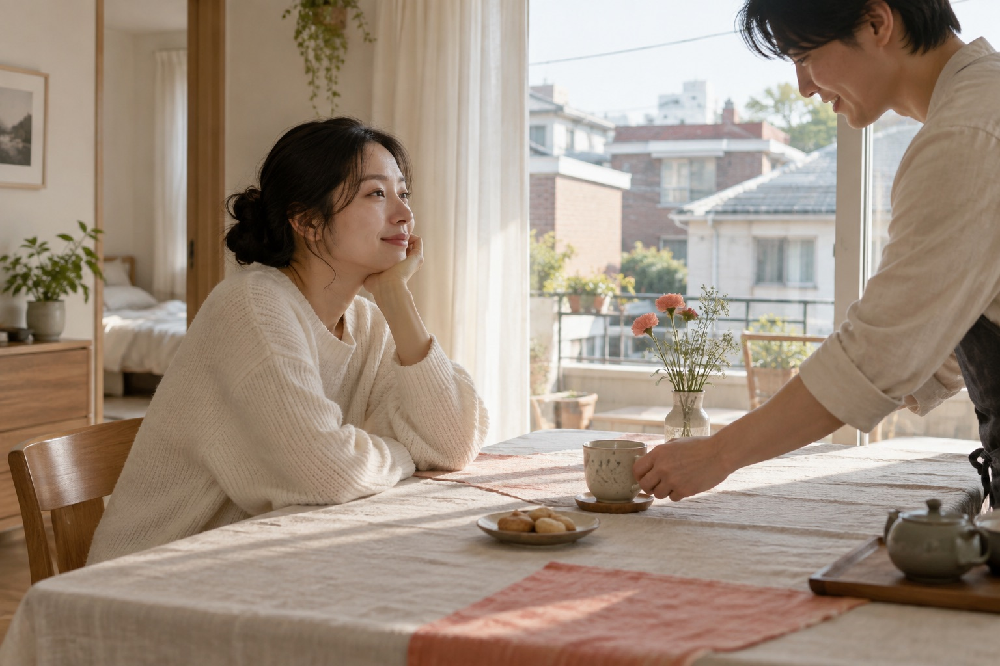
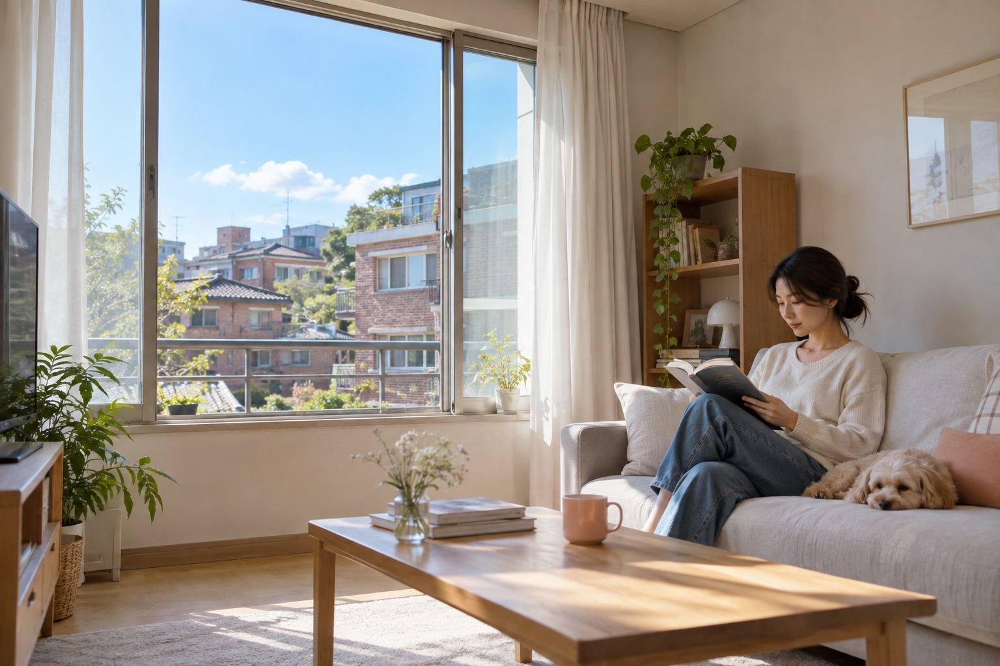

01 / QUIET WARMTH잔잔한 온기가까움 · 세심함 · 촉감 · 동행리넨·밝은 목재·손동작. 노란 필터 없이 따뜻한 자연광을 유지합니다.독립 6페이지 열기 →
02 / CLEAR OBSERVATION맑은 시선명료함 · 공기감 · 근거 · 준비중립적인 자연광·열린 창·명료한 손동작. 에어블루부터 딥스카이까지 사진의 하늘과 그림자로 연결합니다.독립 6페이지 열기 →
03 / ROOM FOR EVERYDAY일상의 여백지속되는 일상 · 여유 · 가벼움 · 자율성현관·창가·생활의 테이블·주택가 골목. 인물보다 주변 공간을 넓게 담고 살구색은 소품 한 곳에만 둡니다.독립 6페이지 열기 →